The district
 City Council
City Council State Assembly
State Assembly State Senate
State Senate Subway
Subway Citi Bike
Citi Bike NYC Ferry
NYC FerryTurn layers on and off. Tap an official's logo or a board's seal for its page. Zoning and land use lot by lot are on the land use map.
About
Representative Hakeem Jeffries represents New York’s 8th Congressional District in the United States House of Representatives. It sits in Brooklyn.
The district overlaps community boards Brooklyn 18, Brooklyn 5, Brooklyn 15, Brooklyn 13, Brooklyn 3, Brooklyn 16 and Brooklyn 2.
It is policed by the 60th, 61st, 63rd, 69th, 73rd, 75th, 79th, 81st and 88th Precincts.
It overlaps council districts 35, 36, 37, 41, 42, 44, 46, 47 and 48, Assembly districts 41, 45, 46, 54, 55, 56, 57, 58, 59 and 60 and Senate districts 17, 19, 20, 21, 22, 23 and 25.
Members of the House serve two year terms, with no term limit.
Next on the ballot in November 2026. Find your poll site and sample ballot there, or see what is coming up on the calendar.
Congressional District 8 in numbers
U.S. Census Bureau, American Community Survey 2019-2023 5-year estimates.
Bills
Committees
Contact
55 Hanson Place, Suite 603
Brooklyn, NY 11217 · also 445 Neptune Avenue, Coney Island
Overlap
Community boards


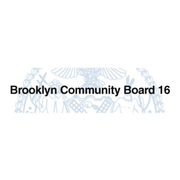


Bars show how many of the district's election districts fall in each board.
Overlapping elected officials

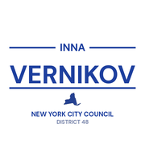
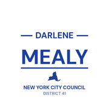


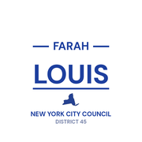
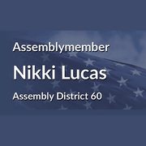
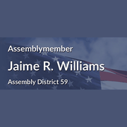
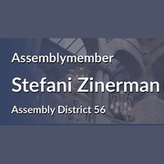
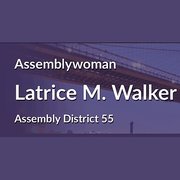

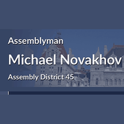
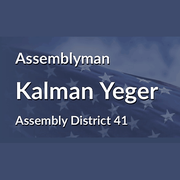
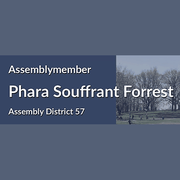

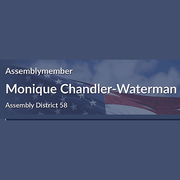
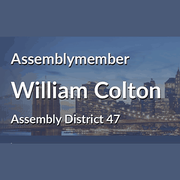
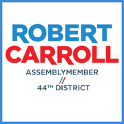
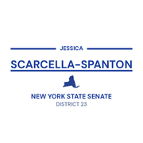
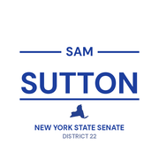
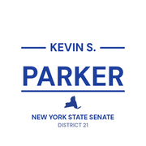
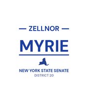

| Brooklyn CB 18 | 25% of the district | 80% of it |
| Brooklyn park/airport area | 18% of the district | 100% of it |
| Brooklyn CB 5 | 15% of the district | 70% of it |
| Brooklyn CB 15 | 14% of the district | 76% of it |
| Brooklyn CB 13 | 11% of the district | 93% of it |
| Brooklyn CB 3 | 9% of the district | 84% of it |
| Brooklyn CB 16 | 6% of the district | 92% of it |
| Brooklyn CB 2 | 2% of the district | 16% of it |
| 63 Precinct | 25% of the district | 81% of it |
| 75 Precinct | 18% of the district | 74% of it |
| 69 Precinct | 14% of the district | 97% of it |
| 61 Precinct | 14% of the district | 77% of it |
| 60 Precinct | 11% of the district | 93% of it |
| 73 Precinct | 6% of the district | 92% of it |
| 81 Precinct | 5% of the district | 99% of it |
| 79 Precinct | 4% of the district | 72% of it |
| 88 Precinct | 2% of the district | 30% of it |
| Sector 63B | 17% of the district | 89% of it |
| Sector 61D | 7% of the district | 99% of it |
| Sector 75E | 7% of the district | 94% of it |
| Sector 63A | 5% of the district | 99% of it |
| Sector 69D | 5% of the district | 98% of it |
| Sector 75D | 4% of the district | 100% of it |
| Sector 61B | 4% of the district | 83% of it |
| Sector 60B | 4% of the district | 83% of it |
| Sector 75C | 4% of the district | 84% of it |
| Sector 69B | 3% of the district | 100% of it |
| Sector 75B | 3% of the district | 90% of it |
| Sector 60D | 3% of the district | 100% of it |
| Sector 69A | 3% of the district | 88% of it |
| Sector 61C | 3% of the district | 92% of it |
| School District 22 | 33% of the district | 64% of it |
| School District 19 | 20% of the district | 74% of it |
| School District 21 | 15% of the district | 52% of it |
| School District 18 | 15% of the district | 62% of it |
| School District 23 | 6% of the district | 91% of it |
| School District 16 | 5% of the district | 86% of it |
| School District 13 | 5% of the district | 38% of it |
| Council District 46 | 36% of the district | 96% of it |
| Council District 42 | 25% of the district | 93% of it |
| Council District 48 | 11% of the district | 75% of it |
| Council District 47 | 9% of the district | 43% of it |
| Council District 36 | 7% of the district | 71% of it |
| Council District 41 | 6% of the district | 57% of it |
| Council District 37 | 2% of the district | 15% of it |
| Council District 35 | 2% of the district | 19% of it |
| Council District 44 | 1% of the district | 7% of it |
| Assembly District 59 | 37% of the district | 97% of it |
| Assembly District 60 | 17% of the district | 98% of it |
| Assembly District 45 | 9% of the district | 70% of it |
| Assembly District 46 | 8% of the district | 45% of it |
| Assembly District 55 | 7% of the district | 79% of it |
| Assembly District 56 | 7% of the district | 78% of it |
| Assembly District 41 | 5% of the district | 41% of it |
| Assembly District 57 | 3% of the district | 40% of it |
| Assembly District 58 | 3% of the district | 26% of it |
| Assembly District 54 | 2% of the district | 14% of it |
| Senate District 19 | 45% of the district | 82% of it |
| Senate District 23 | 16% of the district | 25% of it |
| Senate District 25 | 15% of the district | 68% of it |
| Senate District 22 | 15% of the district | 45% of it |
| Senate District 21 | 8% of the district | 27% of it |
| Senate District 17 | 1% of the district | 4% of it |
| Senate District 20 | 1% of the district | 4% of it |